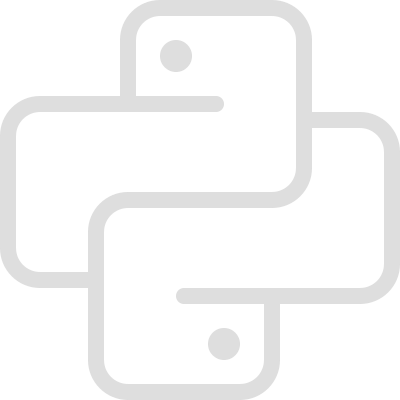

<CNEISI /> 2026
Fisa | Juan Pedro Fisanotti
Qué no es esta charla.
Qué sí es esta charla.
Aprendiendo y primer trabajo.
Backups.
Negociar.
Primer equipo.
Pensar en producción.
Hardware y conexión limitados.
Herramienta != identidad.

Proyectos por gusto.
Comunidad.
Compartir conocimiento.

Mi propio jefe.
Preguntar más.
Entornos poco comunes.
Toda la cancha.
Trabajo remoto.
Ética de lo que hago.
Salud mental.
Enseñando se aprende.
Devolver, hacer crecer a otros.
Reintentar, esperar.
Haciendo IA.
Escala.
Ganar y perder.
Aprender constantemente.
Hardware y conexión limitados 2.0
Observabilidad.
Flexibilidad.
1, 2, ... N
Trabajo != identidad.

Startup y high performance.
Datos en masa.
Infra a escala.
Observabilidad 2.0
IA 2.0
Zoológico de APIs.

Abrirse a aprender y cambiar.
Identidad vs cosas pasajeras.
Disfrutar de hacer cosas bien.
Participar, contacto.
Ayudar a otros a crecer.
Fisa | Juan Pedro Fisanotti
@fisadev, fisadev@gmail.com